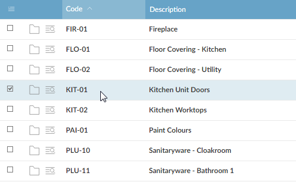
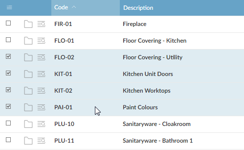

To select records
- To select a single record, click the record.
Figure 1: Selecting a Single Record
 - To select several adjacent records, click the first record you want to select, hold down Shift, and click the last record you want to select.
Figure 2: Selecting Adjacent Records
 - To select several separate records, hold down Ctrl and click each record.
Figure 2: Selecting Adjacent Records

- To select all the records in a browse, hold down Shift and click
 (at the top left corner of the browse).
(at the top left corner of the browse). - To see how many records you have selected, move the mouse pointer over the button; the
- To show only the records you have selected, button, or move the mouse pointer over the button button
- If you have selected several records and want to un-select one, hold down Ctrl and click the record you want to un-select.